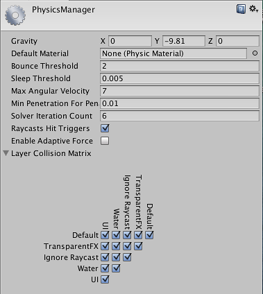

Physics
Use the Physics settings (main menu: Edit > Project Settings, then select the Physics category) to apply global settings for 3D physics.
Note: To manage global settings for 2D physics, use the Physics 2D settings instead.

These settings define limits on the accuracy of the physical simulation. Generally speaking, a more accurate simulation requires more processing overhead, so these settings offer a way to trade off accuracy against performance. For more information, see the Physics section of the manual.
| Property | Function | |
|---|---|---|
| Gravity | Use the x, y and z axes to set the amount of gravity applied to all Rigidbody components. For realistic gravity settings, apply a negative number to the y axis. Gravity is defined in world units per seconds squared. Note: If you increase the gravity, you might need to also increase the Default Solver Iterations value to maintain stable contacts. |
|
| Default Material | Set a reference to the default Physics Material to use if none has been assigned to an individual Collider. | |
| Bounce Threshold | Set a velocity value. If two colliding objects have a relative velocity below this value, they do not bounce off each other. This value also reduces jitter, so it is not recommended to set it to a very low value. | |
| Sleep Threshold | Set a global energy threshold, below which a non-kinematic Rigidbody (that is, one that is not controlled by the physics system) may go to sleep. When a Rigidbody is sleeping, it is not updated every frame, making it less resource-intensive. If a Rigidbody’s kinetic energy divided by its mass is below this threshold, it is a candidate for sleeping. | |
| Default Contact Offset | Set the distance the collision detection system uses to generate collision contacts. The value must be positive, and if set too close to zero, it can cause jitter. This is set to 0.01 by default. Colliders only generate collision contacts if their distance is less than the sum of their contact offset values. | |
| Default Solver Iterations | Define how many solver processes Unity runs on every physics frame. Solvers are small physics engine tasks which determine a number of physics interactions, such as the movements of joints or managing contact between overlapping Rigidbody components. This affects the quality of the solver output and it’s advisable to change the property in case non-default Time.fixedDeltaTime is used, or the configuration is extra demanding. Typically, it’s used to reduce the jitter resulting from joints or contacts. |
|
| Default Solver Velocity Iterations | Set how many velocity processes a solver performs in each physics frame. The more processes the solver performs, the higher the accuracy of the resulting exit velocity after a Rigidbody bounce. If you experience problems with jointed Rigidbody components or Ragdolls moving too much after collisions, try increasing this value. | |
| Queries Hit Backfaces | Enable this option if you want physics queries (such as Physics.Raycast) to detect hits with the backface triangles of MeshColliders. By default, this setting is disabled. |
|
| Queries Hit Triggers | Enable this option if you want physics hit tests (such as Raycasts, SphereCasts and SphereTests) to return a hit when they intersect with a Collider marked as a Trigger. Individual raycasts can override this behavior. By default, this setting is enabled. | |
| Enable Adaptive Force | Enable this option to enable the adaptive force. The adaptive force affects the way forces are transmitted through a pile or stack of objects, to give more realistic behaviour. By default, this setting is disabled. | |
| Contacts Generation | Choose a contact generation method. | |
| Legacy Contacts Generation | Before Unity 5.5, Unity used a contacts generation method based on the separating axis theorem (SAT. PCM is more efficient, but for older projects, you might find it easier to continue using SAT, to avoid needing to retweak physics slightly. PCM can result in a slightly different bounce, and fewer useless contacts end up in the contacts buffers (that is, the arrays you get in the Collision instance passed to OnCollisionEnter, OnCollisionStay, and OnCollisionExit).Upgrade advice: To migrate a Project made with Unity 2018.2 or lower, you might need to update your scripts to work with the code that merges patches in the manifold, and selects contacts. |
|
| Persistent Contacts Manifold (PCM) | Generates fewer contacts every physics frame, and more contact data is shared across frames. The PCM contacts generation path is also more accurate, and usually produces better collision feedback in most of the cases. For more information, see Nvidia documentation on Persistent Contact Manifold. This is the default value. |
|
| Auto Simulation | Enable this option to run the physics simulation automatically or allow explicit control over it. | |
| Auto Sync Transforms | Enable this option to automatically sync transform changes with the physics system whenever a Transform component changes. | |
| Contact Pairs Mode | Choose the type of contact pair generation to use. | |
| Default Contact Pairs | Receive collision and trigger events from all contact pairs except kinematic-kinematic and kinematic-static pairs. | |
| Enable Kinematic Kinematic Pairs | Receive collision and trigger events from kinematic-kinematic contact pairs. | |
| Enable Kinematic Static Pairs | Receive collision and trigger events from kinematic-static contact pairs. | |
| Enable All Contact Pairs | Receive collision and trigger events from all contact pairs. | |
| Broadphase Type | Choose which broad-phase algorithm to use in the physics simulation. See NVIDIA’s documentation on PhysX SDK and Rigid Body Collision. | |
| Sweep and Prune Broadphase_ | Use the sweep-and-prune broad phase collision method (that is, sorting objects along a single axis to rule out having to check pairs that are far apart). | |
| _Multibox Pruning Broadphase | Multi-box pruning uses a grid, and each grid cell performs sweep-and-prune. This usually helps improve performance if, for example, there are many GameObjects in a flat world. | |
| World Bounds | Define the 2D grid that encloses the world to prevent far away objects from affecting each other when using the Multibox Pruning Broadphase algorithm. This option is only used when you set Broadphase Type to Multibox Pruning Broadphase. |
|
| World Subdivisions | The number of cells along the x and z axis in the 2D grid algorithm. This option is only used when you set Broadphase Type to Multibox Pruning Broadphase. |
|
| Friction Type | Choose the friction algorithm used for simulation. | |
| Patch Friction Type | A basic strong friction algorithm which typically leads to the most stable results at low solver iteration counts. This method uses only up to four scalar solver constraints per pair of touching objects. | |
| One Directional Friction Type | A simplification of the Coulomb friction model, in which the friction for a given point of contact is applied in the alternating tangent directions of the contact's normal. Reduces the number of iterations required for convergence but is not as accurate as the two-directional model. | |
| Two Directional Friction Type | Like the one-directional model, but applies friction in both tangent directions simultaneously. This requires more solver iterations but is more accurate. More expensive than patch friction for scenarios with many contact points because it is applied at every contact point. | |
| Enable Enhanced Determinism | Simulation in the scene is consistent regardless the actors present, provided that the game inserts the actors in a deterministic order. This mode sacrifices some performance to ensure this additional determinism. | |
| Enable Unified Heightmaps | Enable this option to process Terrain collisions in the same way as Mesh collisions. | |
| Layer Collision Matrix | Define how the layer-based collision detection system behaves. Select which layers on the Collision Matrix interact with the other layers by checking them. | |
| Cloth Inter-Collision | ||
| Distance | Define the diameter of a sphere around each intercolliding Cloth particle. Unity ensures that these spheres do not overlap during simulations. Distance should be smaller than the smallest distance between two particles in the configuration. If the distance is larger, cloth collision may violate some distance constraints and result in jittering. | |
| Stiffness | How strong the separating impulse between intercolliding Cloth particles should be. The cloth solver calculates this and it should be enough to keep the particles separated. |